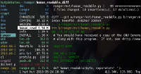

ranger - file manager
Description
ranger is a free console file manager that gives you greater flexibility
and a good overview of your files without having to leave your *nix console.
It visualizes the directory tree in two dimensions: the directory hierarchy
on one, lists of files on the other, with a preview to the right so you know
where you'll be going.

The default keys are similar to those of Vim, Emacs and Midnight Commander,
though ranger is easily controllable with just the arrow keys or the mouse.
The program is written in Python (2.6 or 3.1) and uses curses for the
text-based user interface.
Thanks to the fantastic people from the GNU project for hosting ranger even though ranger is not part of gnu, hence the nongnu.org domain.
Dependencies
Features
- Multi-column display (Miller Columns)
- Preview of the selected file/directory
- Common file operations (create/chmod/copy/delete/...)
- VIM-like console and hotkeys
- Automatically determine file types and run them with correct programs
- Change the directory of your shell after exiting ranger
- Tabs, Bookmarks, Mouse support
Information
Changelog
NOTE: This log only documents changes between stable versions.
2010-10-10: Version 1.2.2
- Prevent currently used directories from being garbage collected
- Disable mouse buttons when console is open
- Fixed :cd command: Without arguments, cd's into $HOME
- Fixed bug which prevented pydoc to work on some config files
- Fixed some bugs in "snow" and "jungle" colorschemes
- Several other clean-ups and fixes
2010-09-16: Version 1.2.1
- Fixed yy/pp bug when yanking multiple directories
2010-09-13: Version 1.2.0
- !!! Changed the default configuration directory to ~/.config/ranger !!!
- Removed "Console Modes", each old mode is now a simple command
- Disabled file previews by default if ranger is used by root
- Allow to jump to specific help sections by typing two numbers, e.g. 13?
- Added keys: da, dr, ya, yr for adding and removing files from copy buffer
- Added keys: gl and gL to resolve links, see 11?
- Added key: pL to create a relative symlink
- Added %<LETTER> and %<N><LETTER> macros for the console, see 33?
- Fixed ansi codes for colors in the pager
- Use the file ~/.mime.types for mime type detection
- Several clean-ups and fixes
NOTE: From 1.2 on, odd minor version numbers (1.3, 1.5, 1.7,..) are assigned to
the fresh git snapshots while stable versions will have even minor numbers.
2010-07-17: Version 1.1.2
- Fix crash when using scrollwheel to scroll down in some cases
- The command "ranger dir1 dir2 ..." opens multiple directories in tabs
- Removed pydoc html documentation by default, re-create it with "make doc"
- Minor fixes
2010-06-18: Version 1.1.1
- New install script, "setup.py"
- New flag for running programs: "w" (waits for enter press)
- Minor fixes
2010-06-09: Version 1.1.0
- Added a man page
- Tab support
- Improved directory loading performance
- Commands are definable in ~/.ranger/commands.py
- Case insensitive sorting (type zs)
- Better UTF support
- Possibility to turn off previews (zp and zP)
- Changing options with :set (e.g. :set column_ratios=1,2,3,4)
- Ask for confirmation when using :delete
- New invocation flag: --fail-unless-cd
- New hotkeys, commands, options.
- New syntax for ~/.ranger/keys.py
- Several user contributions
- And tons of general improvements
NOTE: The syntax for configuration is still subject to change.
{kind=link}